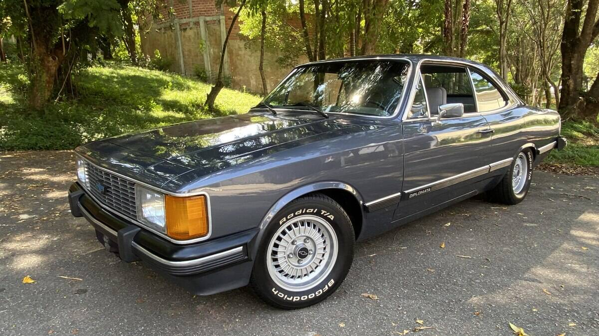
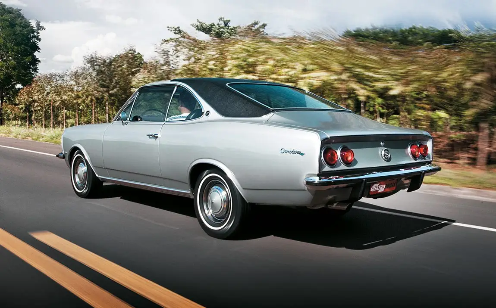

Modelos Clássicos do Opala
Ao longo dos anos, o Chevrolet Opala ganhou várias versões que marcaram época e conquistaram fãs em todo o Brasil. Confira os principais modelos:
-
Opala SS - Versão esportiva que fez história nos anos 70.

-
Opala Diplomata - Modelo de luxo, muito apreciado nos anos 80.
 -
Opala Comodoro - Um dos mais vendidos, equilibrando conforto e estilo.
 -
Opala Caravan - Versão perua, ideal para famílias, lançada em 1975.